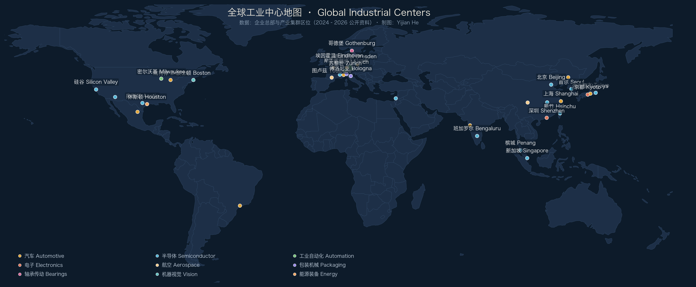
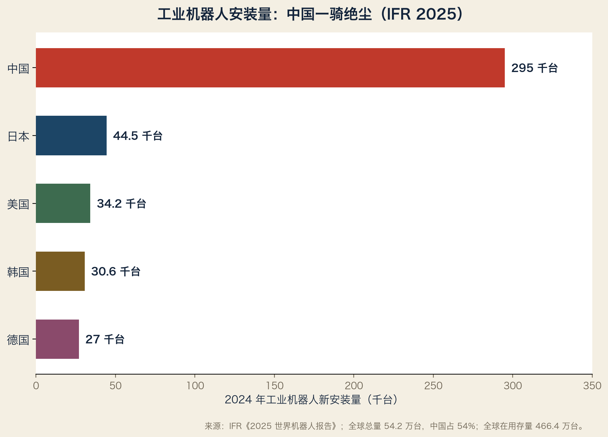

本章是第一卷的心脏：按产业，而不是按国家，画出全球工业地图。 阅读方法：像翻地图册一样翻。不需要记住所有名字，只需要建立“哪里有什么”的骨架。
2.0 为什么第一级目录是“产业”
如果按国家写，读者会得到十本平行的国别史：德国工业、日本工业、美国工业……每一本内部都是散的，读者无法比较。
如果按产业写，读者一眼看到全球竞争格局：
机器人
├── 日本（Fanuc / Yaskawa / Kawasaki / Denso）
├── 欧洲（ABB / KUKA / Comau / Stäubli）
├── 美国（系统集成强，本体依赖进口）
├── 中国（Estun / EFORT / SIASUN，份额快速上升）
└── 韩国（Hyundai / Doosan，显示/汽车驱动）
国家自动成为第二级目录。这就是本章的结构。

每个产业的固定格式：
一句话定位
数据框（全球规模、头部集中度）
全球中心表（国家 → 城市/地区 → 代表企业 → 定位）
怎么读这张图（关键竞争格局）
2.1 汽车（Automotive / Automobilindustrie）
一句话：全球最大、产业链最长的消费品工业之一，正在从“发动机+变速箱”转向“电池+软件”。
数据框（2023–2024 年公开口径）：
| 指标 | 数值 | 来源 |
|---|---|---|
| 德国乘用车产量（2024） | 约 411 万辆 | VDA |
| 德国汽车业从业人数（2024） | 约 77.3 万 | VDA |
| 中国汽车产销（2024） | 均超 3100 万辆，全球第一 | 中汽协（约数） |
| 墨西哥汽车产量（2024） | 约 400 万辆 | AMIA（约数） |
全球中心表：
| 国家 | 城市/地区 | 代表企业 | 定位 |
|---|---|---|---|
| 德国 | 斯图加特（巴符州） | Mercedes-Benz、Porsche、Bosch、Mahle | 豪华车与零部件心脏 |
| 德国 | 慕尼黑/英戈尔施塔特/丁戈尔芬（拜仁州） | BMW、Audi、MAN | 豪华车与卡车 |
| 德国 | 沃尔夫斯堡/汉诺威 | Volkswagen 集团 | 欧洲最大车企总部 |
| 日本 | 丰田市/名古屋（爱知县） | Toyota、Denso、Aisin | 全球最深的汽车集群之一 |
| 日本 | 东京/广岛/栃木 | Honda、Nissan、Mazda、Subaru | 多中心布局 |
| 美国 | 底特律（密歇根） | GM、Ford、Stellantis NA | 传统汽车三巨头 |
| 美国 | 奥斯汀/弗里蒙特/加州 | Tesla | 电动车新势力 |
| 韩国 | 首尔/蔚山/华城 | Hyundai、Kia、LG 系 | 垂直整合+出口导向 |
| 中国 | 上海/长三角 | 上汽、Tesla、蔚来、吉利 | 电动车与智能汽车中心 |
| 中国 | 广州/深圳/珠三角 | 广汽、比亚迪、小鹏 | 南方电动车走廊 |
| 中国 | 长春/沈阳 | 一汽、宝马沈阳 | 东北老工业基地转型 |
| 中国 | 重庆/武汉 | 长安、东风 | 内陆整车与零部件带 |
| 墨西哥 | 蒙特雷/巴希奥（Aguascalientes、Guanajuato、Puebla） | VW、Nissan、GM、Kia 工厂 | 北美近岸制造中心 |
| 捷克 | 姆拉达-博莱斯拉夫 | Škoda Auto | 欧洲人均汽车产量最高之一 |
| 印度 | 浦那/金奈/古尔冈 | Tata、Mahindra、Hyundai India、Maruti | 低成本+右舵市场 |
| 越南 | 海防/河内 | VinFast 及供应商 | 新兴组装中心 |
怎么读这张图：
1. 德日美韩中五极主导；墨西哥和东欧是“组装飞地”。
2. 电动化把供应链重心从“发动机”转向“电池+芯片”。
3. 斯图加特、名古屋、底特律都在转型，但底子完全不同。
2.2 机器人（Robotics / Robotik）
一句话：全球工业机器人安装量十年翻了一倍，中国从买家变成最大买家，并正在成为最大制造国。
数据框（IFR《2025 世界机器人报告》，2024 年数据）：
| 指标 | 数值 |
|---|---|
| 全球新安装工业机器人 | 54.2 万台 |
| 全球在用存量 | 466.4 万台 |
| 中国安装量 | 29.5 万台，占全球 54% |
| 日本 | 4.45 万台（第二） |
| 美国 | 3.42 万台（第三） |
| 韩国 | 3.06 万台（第四） |
| 德国 | 2.70 万台（第五，欧洲最大） |
| 协作机器人 | 6.45 万台，占新安装 11.9% |
| 中国本土品牌在中国市场份额 | 57%（首次超过外资） |

全球中心表：
| 国家 | 城市/地区 | 代表企业 | 定位 |
|---|---|---|---|
| 日本 | 山梨县忍野村 | Fanuc | 全球最大工业机器人制造商之一 |
| 日本 | 北九州（福冈） | Yaskawa | 伺服+机器人，九州制造带 |
| 日本 | 东京/爱知/京都 | Kawasaki、Denso、Omron、Mitsubishi | 汽车关联机器人 |
| 德国 | 奥格斯堡（拜仁州） | KUKA | 欧洲传统四大家族之一 |
| 瑞士 | 苏黎世/普法菲孔 | ABB（集团）、Stäubli | 精密机器人（ABB 机器人主产地在瑞典韦斯特罗斯） |
| 意大利 | 都灵 | Comau | 汽车产线机器人 |
| 丹麦 | 欧登塞 | Universal Robots（Teradyne 旗下） | 协作机器人发明者 |
| 美国 | 波士顿/密尔沃基 | Teradyne、Rockwell 生态、系统集成商 | 集成强、本体弱 |
| 中国 | 南京/上海/苏州 | Estun、SIASUN、EFORT | 国产品牌份额第一 |
| 中国 | 深圳/东莞 | 大族、汇川、优必选 | 从 3C 制造长出的机器人带 |
| 韩国 | 首尔/大邱 | Hyundai Robotics、Doosan Robotics | 协作+汽车 |
| 印度 | 浦那/金奈 | 以汽车应用为主，安装量世界第六 | 新兴市场 |
怎么读这张图：
1. 机器人四大家族（Fanuc、ABB、Yaskawa、KUKA）总部仍集中在日欧。
2. 最大市场在中国，中国厂商份额已过半；但核心零部件仍依赖日本减速器与伺服。
3. 看机器人，不能只看整机：减速器（Nabtesco、Harmonic Drive）和伺服才是“咽喉”。
2.3 半导体（Semiconductor / Halbleiter）
一句话：现代工业的“石油”，2024 年全球销售额首次突破 6000 亿美元。
数据框（SIA，2025-02 发布）：
| 指标 | 数值 |
|---|---|
| 2024 全球销售额 | 6276 亿美元（+19.1%） |
| 2023 全球销售额 | 5268 亿美元 |
| 最大产品门类 | 逻辑芯片、存储芯片、模拟芯片 |
全球中心表：
| 国家/地区 | 城市/地区 | 代表企业 | 定位 |
|---|---|---|---|
| 中国台湾 | 新竹科学园区/台中/台南/高雄 | TSMC、UMC、MediaTek | 全球晶圆代工中心 |
| 韩国 | 首尔/水原/华城/平泽、利川 | Samsung、SK hynix | 存储与代工 |
| 美国 | 硅谷/奥斯汀/凤凰城 | Intel、Nvidia、AMD、Qualcomm、Applied Materials、Lam、KLA | 设计+设备+制造回流 |
| 日本 | 东京/熊本/大分 | 铠侠、索尼半导体、瑞萨、东京电子；TSMC 熊本 | 设备材料强，代工复兴 |
| 荷兰 | 埃因霍温（费尔德霍芬） | ASML | EUV 光刻机垄断者 |
| 德国 | 德累斯顿（萨克森州） | Infineon、GlobalFoundries、Bosch、TSMC 建厂中 | 欧洲最大半导体集群之一 |
| 中国 | 上海/北京/深圳/合肥/武汉 | SMIC、长江存储、长鑫存储、华虹 | 自主制造追赶者 |
| 以色列 | 海法/特拉维夫 | Intel、Tower、Mobileye | 设计高地 |
| 马来西亚 | 槟城 | 封测集群（Intel、ASE 等） | 全球封测重镇 |
怎么读这张图：
1. 设计和制造已经分离：美国设计、台湾代工、日荷设备材料、东南亚封测。
2. “卡脖子”的本质是地图上的节点依赖：少一个节点，整条链停摆。
3. 看半导体，必须同时看设备（ASML）、材料（日本）和制造（TSMC/Samsung）。
2.4 工业自动化（Industrial Automation / Industrieautomation）
一句话：让工厂自己运转的技术总称，全球市场规模约 2000 亿美元量级（2024 年各机构估算 1900–2100 亿美元）。
全球中心表（详见第三章）：
| 国家 | 城市/地区 | 代表企业 | 定位 |
|---|---|---|---|
| 德国 | 慕尼黑/纽伦堡-埃尔朗根 | Siemens、Bosch Rexroth、Infineon | PLC、驱动、工业软件 |
| 德国 | 斯图加特-卡尔斯鲁厄带 | SEW、Balluff、Festo、Trumpf、SICK | 驱动、传感、机器视觉 |
| 德国 | 曼海姆/埃森 | Pepperl+Fuchs、Turck | 防爆与工业传感 |
| 德国 | 腓特烈港/泰特南 | ifm electronic、ZF | 传感器与传动 |
| 美国 | 密尔沃基/克利夫兰/奥斯汀 | Rockwell、Emerson、NI（艾默生旗下） | 北美自动化标准 |
| 美国 | 波士顿 | Teradyne、Cognex、Motion 生态 | 机器视觉与测试 |
| 日本 | 名古屋/京都/东京 | Mitsubishi、Omron、Keyence、Fanuc、Yaskawa | PLC、伺服、视觉 |
| 瑞士 | 苏黎世/巴登 | ABB | 机器人+电气化 |
| 法国 | 吕埃-马尔迈松/格勒诺布尔 | Schneider Electric | PLC/SCADA 全球巨头 |
| 中国 | 深圳/上海/北京 | 汇川、信捷、和利时、中控、海康机器人 | 本土替代最快的市场 |
怎么读这张图：
1. 自动化不是“一个产业”，而是一条横跨电气、机械、软件的链。
2. 德国强在“现场层”（传感、驱动、机械），美国强在“软件与集成”，日本强在“精密运动”。
3. 中国在伺服、视觉、PLC 的份额正在快速上升，这是未来十年最重要的变量。
2.5 光学（Optics / Optik）
一句话：半导体、医疗、汽车、科研都需要光，全球光学产业是“隐形的基础设施”。
全球中心表：
| 国家 | 城市/地区 | 代表企业 | 定位 |
|---|---|---|---|
| 德国 | 奥伯科亨/耶拿/韦茨拉尔 | Zeiss、Jenoptik、Leica（徕卡显微） | 高端光学与光刻 |
| 德国 | 美因茨 | Schott | 特种玻璃 |
| 日本 | 东京/大分/山梨 | Canon、Nikon、Hoya、Olympus | 相机、光刻、医疗内镜 |
| 美国 | 罗切斯特（纽约州） | 光学产业历史中心；CVI、MKS 系 | 研究与应用 |
| 中国 | 深圳/成都/武汉 | 舜宇（宁波）、联创电子、长光所系 | 镜头与光学元件制造 |
| 中国台湾 | 大立光（台中） | 大立光电 | 手机镜头世界第一 |
数据点：蔡司集团 2023/24 财年营收 108.94 亿欧元，其中半导体制造技术业务约 41.22 亿欧元；员工约 4.3 万（2024/25 财年末已超 4.65 万）。
怎么读这张图：
1. 光学的地图被两家德国企业和两家日本企业主导：Zeiss、Canon、Nikon、Olympus。
2. 蔡司已经不只是镜头公司：光刻光学（EUV）是它最大的增长引擎。
3. 中国台湾大立光和大陆舜宇在“手机镜头”这个细分市场改变了格局。
2.6 航空与航天（Aerospace / Luft- und Raumfahrt）
一句话：全球只有少数国家能造大飞机和航空发动机，供应链以“主制造商—一级供应商”两层结构为主。
全球中心表：
| 国家 | 城市/地区 | 代表企业 | 定位 |
|---|---|---|---|
| 法国 | 图卢兹 | Airbus 总装、机翼（英国布劳顿） | 空客总部与总装 |
| 美国 | 西雅图/埃弗雷特/查尔斯顿 | Boeing | 波音总装 |
| 美国 | 威奇托（堪萨斯） | Spirit AeroSystems | 机身与结构件 |
| 英国 | 德比/布里斯托 | Rolls-Royce | 航空发动机 |
| 德国 | 慕尼黑/奥托布伦/汉堡 | Airbus Deutschland、MTU、Lilium 系 | 机身、发动机、MRO |
| 加拿大 | 蒙特利尔 | Bombardier、Pratt & Whitney Canada | 支线机与发动机 |
| 中国 | 上海/西安/成都/沈阳 | COMAC、AVIC 系 | C919 供应链 |
| 日本 | 名古屋（爱知） | 三菱重工航空、川崎重工 | 机体结构件 |
| 新加坡 | 新加坡 | 全球 MRO 枢纽 | 维修与改装 |
怎么读这张图：
1. 大飞机是“国家能力”项目，只有美欧中俄能进入。
2. 发动机与航电是最硬的节点：RR、GE、Pratt & Whitney 三极。
3. 图卢兹和西雅图都是典型的“一个产业定义一座城市”。
2.7 机床（Machine Tools / Werkzeugmaschinen）
一句话：制造机器的机器，德国和日本长期占据全球前两位。
全球中心表：
| 国家 | 城市/地区 | 代表企业 | 定位 |
|---|---|---|---|
| 德国 | 迪青根/斯图加特地区 | Trumpf | 激光机床世界第一 |
| 德国 | 图特林根/埃斯林根/尼尔廷根/格平根 | Chiron、Index、Heller、Schuler | 加工中心与压力机带 |
| 德国 | 比勒费尔德/普夫龙滕 | DMG MORI（德国部分） | 车铣复合 |
| 日本 | 名古屋/大口町/伊贺 | Mazak、Okuma、DMG MORI、Fanuc | 全球产量第一集团 |
| 日本 | 新潟/长野 | 长野工业带（松本、饭田） | 精密加工零部件 |
| 瑞士 | 瑞士西北部 | Tornos、GF Machining Solutions、Mikron | 车床与微加工 |
| 美国 | 辛辛那提/肯塔基 | Mazak 美国、Fives 系 | 大市场+本地制造 |
| 中国 | 沈阳/大连/北京/宁波 | 沈阳机床、北一、海天精工 | 中低端规模第一，高端追赶 |
| 中国台湾 | 台中 | 台中精机、友嘉、上银（Hiwin） | 中高端机床与直线传动 |
| 韩国 | 昌原 | DN Solutions（斗山） | 全球出货量前列 |
怎么读这张图：
1. 日本+德国+瑞士≈高端机床的半壁江山。
2. 台湾的厉害之处在于产业链：Hiwin 的直线导轨与滚珠丝杠是隐形节点。
3. 中国是最大市场，也是最大追赶者；高端五轴仍是短板。
2.8 轴承与传动（Bearings & Drives / Lager und Antriebe）
一句话：所有旋转的地方都需要它；全球轴承市场约 400–500 亿美元量级，头部高度集中。
全球中心表：
| 国家 | 城市/地区 | 代表企业 | 定位 |
|---|---|---|---|
| 瑞典 | 哥德堡 | SKF | 全球轴承第一品牌（历史口径） |
| 德国 | 黑措根奥拉赫/施韦因富特 | Schaeffler（INA/FAG） | 汽车+工业轴承 |
| 德国 | 布鲁赫萨尔（巴符州） | SEW-EURODRIVE | 减速机与驱动 |
| 德国 | 波霍尔特/弗里德里希港 | Flender（西门子能源系）、ZF | 大型传动 |
| 德国 | 伊格斯海姆（巴符州） | Wittenstein | 伺服减速机与医疗驱动 |
| 日本 | 东京/大阪/柏原 | NSK、NTN、Nachi、JTEKT | 精密轴承三强 |
| 日本 | 长野 | Harmonic Drive | 谐波减速器 |
| 美国 | 坎顿（俄亥俄） | Timken | 圆锥滚子轴承 |
| 中国 | 洛阳/瓦房店/上海/温州 | LYC、ZWZ、人本（C&U）、五洲新春 | 规模大、高端追赶 |
| 意大利 | 博洛尼亚/雷焦艾米利亚 | Bonfiglioli | 工业减速机 |
| 德国 | 巴尔格特海德（汉堡北） | Nord Drivesystems | 减速机与电机 |
怎么读这张图：
1. 轴承：SKF、Schaeffler、NSK、NTN、Timken 五强主导。
2. 减速机：SEW、Flender、ZF、Nord、Bonfiglioli、Wittenstein 各占一条细分链。
3. 机器人减速器单独成图：Nabtesco（RV）与 Harmonic Drive（谐波）几乎垄断高端。
2.9 传感器（Sensors / Sensorik）
一句话：工业自动化的“五官”，德国拥有全球最密集的工业传感器企业群。
全球中心表：
| 国家 | 城市/地区 | 代表企业 | 定位 |
|---|---|---|---|
| 德国 | 瓦尔德基希（弗莱堡附近） | SICK | 全球工业传感器巨头 |
| 德国 | 诺伊豪森（斯图加特旁） | Balluff | 传感器与识别 |
| 德国 | 曼海姆 | Pepperl+Fuchs | 接近传感器与防爆 |
| 德国 | 埃森 | Turck | 工业现场传感 |
| 德国 | 泰特南/腓特烈港 | ifm electronic | 传感器与 IO-Link |
| 日本 | 京都/大阪 | Omron、Keyence | 传感+视觉，Keyence 利润极高 |
| 日本 | 滨松 | Hamamatsu Photonics | 光传感器 |
| 美国 | 达拉斯/波士顿/威尔逊维尔 | TI、ADI、FLIR（Teledyne） | 芯片级传感 |
| 法国 | 格勒诺布尔 | STMicroelectronics | MEMS 传感器 |
| 中国 | 深圳/上海/潍坊/杭州 | 汇顶、歌尔、汉威、海康 | 消费与工业传感追赶 |
怎么读这张图：
1. 德国把“传感”做成了一条完整产业带：从曼海姆经斯图加特到弗莱堡。
2. 传感器分两层：元件层（芯片/MEMS）被美日欧芯片厂控制，器件层被德国隐形冠军控制。
3. 视觉传感器是增长最快的分支，正在和机器视觉合并成一张图。
2.10 包装机械（Packaging Machinery / Verpackungsmaschinen）
一句话：全球约 40% 的包装机械需求来自食品饮料；德国和意大利是两个绝对中心。
全球中心表：
| 国家 | 城市/地区 | 代表企业 | 定位 |
|---|---|---|---|
| 德国 | 新特劳布林（雷根斯堡附近） | Krones | 饮料灌装线世界第一 |
| 德国 | 多特蒙德 | KHS | 灌装与包装 |
| 德国 | 克拉尔斯海姆/施韦比施哈尔带 | Syntegon、Packaging Valley 集群 | 医药与食品包装 |
| 意大利 | 博洛尼亚/摩德纳/帕尔马 | Coesia（GD、Tetra Pak 系外）、IMA、Marchesini、Sacmi | 烟草、医药、陶瓷机械 |
| 瑞士 | 乌茨维尔 | Bühler | 食品加工设备 |
| 瑞典 | 隆德 | Tetra Pak | 液体食品包装系统 |
| 美国 | 芝加哥/俄亥俄 | ProMach、Barry-Wehmiller | 北美本土集成 |
| 日本 | 大阪/滋贺 | 涩谷工业、大福（物流） | 食品与医药包装 |
| 中国 | 广州/杭州/温州 | 中亚机械、新美星、永创智能 | 中端规模扩张 |
怎么读这张图：
1. 德国“包装谷”（Packaging Valley）+ 意大利艾米利亚-罗马涅 = 全球双中心。
2. Krones 2024 年营收 52.9 亿欧元，客户从啤酒厂到乳品厂全覆盖。
3. 包装机械的隐形冠军密度，不亚于传感器行业。
2.11 医疗器械（Medical Technology / Medizintechnik）
一句话：德国是欧洲最大医疗器械制造国；图特林根是“手术器械之都”。
全球中心表：
| 国家 | 城市/地区 | 代表企业 | 定位 |
|---|---|---|---|
| 德国 | 图特林根（巴符州） | Karl Storz、Aesculap（B.Braun 旗下） | 手术器械与内镜集群 |
| 德国 | 梅尔松根（黑森州） | B.Braun | 输液与手术耗材 |
| 德国 | 汉堡/汉诺威 | Olympus（德国）、Stryker 系 | 内镜与骨科 |
| 美国 | 明尼阿波利斯/波士顿/孟菲斯 | Medtronic、Boston Scientific、Smith+Nephew | 全球最大市场与创新源 |
| 日本 | 东京/八王子 | Olympus、Terumo、Canon Medical | 内镜与影像 |
| 瑞士 | 巴塞尔/索洛图恩 | Roche 诊断、Straumann | 诊断与牙科 |
| 中国 | 深圳/上海/苏州 | 迈瑞、联影、微创 | 影像与器械国产化 |
怎么读这张图：
1. 医疗器械是“产业区”的教科书案例：图特林根几千人口的小城聚集数百家器械厂。
2. 内镜地图：Olympus（日）与 Karl Storz（德）双雄。
3. 中国迈瑞、联影正在从“性价比”进入高端影像。
2.12 电子元器件（Electronic Components / Elektronische Bauelemente）
一句话：所有智能产品的“细胞”，日本企业在被动元件上保持统治力。
全球中心表：
| 国家 | 城市/地区 | 代表企业 | 定位 |
|---|---|---|---|
| 日本 | 京都/长滨 | Murata、Kyocera、Nidec、Omron | 陶瓷电容、陶瓷、电机 |
| 日本 | 东京/横滨 | TDK、Taiyo Yuden、Rohm | 电感、磁材 |
| 韩国 | 首尔/釜山 | Samsung Electro-Mechanics | MLCC 第二梯队 |
| 中国台湾 | 台北/高雄 | Yageo、国巨、华新科 | MLCC 与电阻 |
| 中国大陆 | 深圳/苏州/无锡 | 风华高科、三环集团、顺络电子 | 国产替代 |
| 美国 | 波士顿/达拉斯 | TI、ADI、AVX（京瓷系） | 主动+被动混合 |
数据点：村田制作所（Murata）2025 财年（截至 2025 年 3 月）营收约 1.831 万亿日元，MLCC 全球份额常被估算为 30–40%；员工约 7.9 万。
怎么读这张图：
1. 一颗电容比米粒还小，但它定义了电子产业链的主动权。
2. 京都是全球被动元件的“硅谷”：Murata、Kyocera、Nidec、Omron 同城。
3. “小而重”的产业，最适合用地图索引查：电容→村田→京都→手机/汽车→份额。
2.13 能源装备（Energy Equipment / Energieanlagen）
一句话：从油气到风电、电网到核电，能源装备是国家工业能力的试金石。
全球中心表：
| 国家 | 城市/地区 | 代表企业 | 定位 |
|---|---|---|---|
| 美国 | 休斯顿 | 油气装备集群 | 全球油服中心 |
| 德国 | 慕尼黑/汉堡/卡塞尔 | Siemens Energy、Siemens Gamesa | 燃气轮机与风电 |
| 丹麦 | 奥胡斯 | Vestas | 风电整机 |
| 瑞士/瑞典 | 苏黎世/卢塞恩 | ABB、Hitachi Energy | 电网设备 |
| 中国 | 上海/沈阳/株洲/昌吉 | 上海电气、沈鼓、特变电工、CRRC | 发电、输变电、机车 |
| 中国 | 北京/金风/明阳 | 金风科技、明阳智能 | 风电整机 |
| 日本 | 东京/横滨 | 三菱重工、东芝、日立能源系 | 燃气轮机与核电 |
| 法国 | 巴黎/贝尔福 | EDF、GE Vernova 法国 | 核电与电网 |
怎么读这张图：
1. 能源转型不是“新产业”，而是旧地图上长出新节点：风电、光伏、储能、氢。
2. 电网设备被 ABB、西门子能源、GE Vernova、日立能源四家把持大半。
3. 中国在输变电和风电整机已是全球最大制造国，但燃气轮机仍是短板。
2.14 化工与材料（Chemicals & Materials / Chemie und Werkstoffe）
一句话：所有制造的地基；德国莱茵河沿岸是欧洲化学工业的原点。
全球中心表：
| 国家 | 城市/地区 | 代表企业 | 定位 |
|---|---|---|---|
| 德国 | 路德维希港 | BASF | 全球最大化工企业之一 |
| 德国 | 勒沃库森/科隆 | Bayer、Covestro | 化工与材料 |
| 美国 | 休斯顿/墨西哥湾沿岸 | Dow、ExxonMobil 化工 | 页岩气时代化工中心 |
| 中国 | 上海/宁波/惠州 | 中石化、中石油、恒力、荣盛 | 全球最大化工市场 |
| 韩国 | 蔚山/丽水 | LG Chem、SK Innovation | 电池材料中心 |
| 日本 | 东京/大阪 | 三菱化学、住友化学 | 电子材料 |
| 新加坡 | 裕廊岛 | ExxonMobil、Shell 炼化 | 亚洲石化枢纽 |
| 比利时/荷兰 | 安特卫普/鹿特丹 | 欧洲化工物流带 | 港口型石化集群 |
怎么读这张图：
1. 化工地图跟着“原料+港口”走：莱茵河、墨西哥湾、裕廊岛。
2. 电子材料（光刻胶、特种气体）是隐形冠军密度最高的细分。
3. 中国是全球最大消费市场，但高端材料仍依赖日德。
2.15 第一课：为什么这些中心“在那里”
现在地图已经画出来了。先别急着下结论，把位置和原因列成一张检查表：
1. 靠近市场 —— 汽车城跟着消费者和整车厂走
2. 靠近原料/能源 —— 化工城跟着港口和油田走
3. 靠近人才/大学 —— 半导体城跟着工科大学走（斯坦福、清华、KIT）
4. 历史路径依赖 —— 手表/武器精度 → 机床 → 自动化（德国南部）
5. 产业集群效应 —— 供应商越全，新企业越愿意来
6. 制度与协会 —— 双元制职业培训、行业协会、展会
7. 地缘与政策 —— 补贴、关税、安全审查
把第二章的每一张表对着这张检查表看一遍，你会得到一个惊人的发现：
工业地图不是随机散布的，而是沿着“市场—原料—人才—历史”四条等高线长出来的。
这就是 What 结束、How 开始的地方。
2.16 从本章到下一章
第二章告诉你“哪里有”。
第三章把其中一个产业——工业自动化——放大，展示本书的完整方法：
世界地图 → 产业链 → 产业集群（国家→州→城市） → 企业
先学透一张地图的画法，后面所有产业都照此办理。
本章练习
- 从本章选一个你之前不了解的产业，写出它的全球前五个中心。
- 用 2.15 的检查表，解释其中两个中心“为什么在那里”。
- 把“轴承”画成一张索引树：产品 → 企业 → 城市 → 集群 → 应用。
词汇笔记（Vokabelnotiz）
| 中文 | Deutsch | English |
|---|---|---|
| 产业中心 | Industriestandort / Zentrum | Industrial center |
| 竞争格局 | Wettbewerbslandschaft | Competitive landscape |
| 市场份额 | Marktanteil | Market share |
| 供应链节点 | Knotenpunkt der Lieferkette | Supply-chain node |
| 近岸外包 | Nearshoring | Nearshoring |